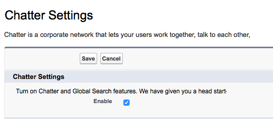
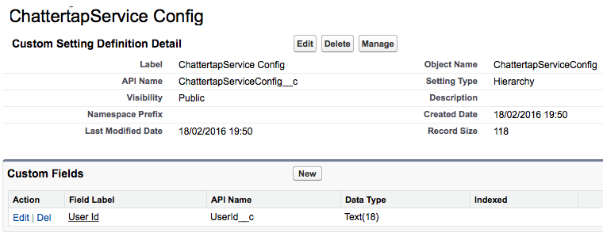
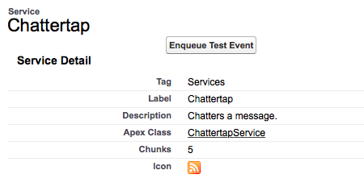
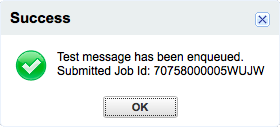
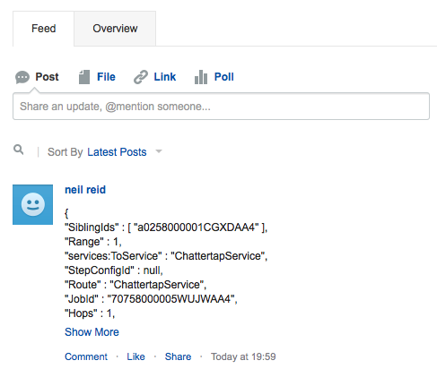
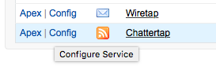
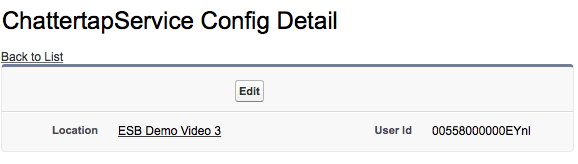

Start by creating a empty class called ChatterService. Next, paste the code
listed in Listing 1 into the newly created class
and press Save.
This service represents the minimum
layout required for recognition by the Services Package.
Although the service has no side effects and performs no useful work, it will be listed
alongside other services in the Services tab of the Services package.
Listing 1
global class ChatterService extends Abstract.Service {
global class Definition extends Abstract.Service.Definition {
String Description = '';
}
global override List<Map<String,Object>> execute(Map<String,Object> event) {
// input
// ...
// action
// ...
// output
return new List<Map<String,Object>>{event};
}
}
The Service Definition API formally documents the creation of a service.
In this guide, we will take a more casual approach
to understanding the construction and testing of a service.
We will use the Debug service as our inspiration. Instead of sending a message to a
specified user's email account, our service (ChatterService) will instead send the message to the user's
chatter feed.
The Services Package has a built-in Debug service that surfaces the parameters of the input event via an email. The email is sent to either:
This Chatter service will replicate the Debug functionality. But as an alternative to surfacing the event parameters in the form of an email, the Chatter service will instead post these event parameters to a user's Chatter Feed.
UserId field of the ChatterServiceConfig
custom setting.
UserId has been entered in the ChatterServiceConfig custom setting,
use the Id of the running user context
Confirm that chatter is enabled for your org. If necessary, click Setup > Chatter > Settings and check Enable.

Create the custom setting (ChatterServiceConfig) to hold the Chatter configuration and
add a custom setting field to hold the UserId of the chatter feed.

Next, update the service definition from Listing 1 with appropriate meta attributes in accordance with the OASIS specification
Listing 2
global class ChatterService extends Abstract.Service {
global class Definition extends Abstract.Service.Definition {
String Description = 'Chatters a message.';
String Tag = 'Services';
String Label = 'Chatter';
String ServiceConfig = ChatterServiceConfig__c.class.getName();
String Icon = 'feed';
Integer Chunks = 5;
String Cardinality = 'One';
}
global override List<Map<String,Object>> execute(Map<String,Object> event) {
// input
// ...
// action
// ...
// output
return new List<Map<String,Object>>{event};
}
}
Under the inputs section of the execute method, extract appropriate event attributes to facilitate correct processing by the service
Listing 3
global class ChatterService extends Abstract.Service {
global class Definition extends Abstract.Service.Definition {
String Description = 'Chatters a message.';
String Tag = 'Services';
String Label = 'Chatter';
String ServiceConfig = ChatterServiceConfig__c.class.getName();
String Icon = 'feed';
Integer Chunks = 5;
String Cardinality = 'One';
}
global override List<Map<String,Object>> execute(Map<String,Object> event) {
// input
Id defaultUserId = (Id)event.get('EnqueueUserId');
ChatterServiceConfig__c ChatterServiceConfig = ChatterServiceConfig__c.getOrgDefaults();
Id userId = ChatterServiceConfig.UserId__c;
if (userId == null) {
userId = defaultUserId;
}
// action
// ...
// output
return new List<Map<String,Object>>{event};
}
}
Finally , add the actual business logic of the service under the action section.
Listing 4
global class ChatterService extends Abstract.Service {
global class Definition extends Abstract.Service.Definition {
String Description = 'Chatters a message.';
String Tag = 'Services';
String Label = 'Chatter';
String ServiceConfig = ChatterServiceConfig__c.class.getName();
String Icon = 'feed';
Integer Chunks = 5;
String Cardinality = 'One';
}
global override List<Map<String,Object>> execute(Map<String,Object> event) {
// input
Id defaultUserId = (Id)event.get('EnqueueUserId');
ChatterServiceConfig__c ChatterServiceConfig = ChatterServiceConfig__c.getOrgDefaults();
Id userId = ChatterServiceConfig.UserId__c;
if (userId == null) {
userId = defaultUserId;
}
// action
FeedItem feedItem = new FeedItem(
ParentId = userId,
Body = json.serializePretty(event)
);
insert feedItem;
// output
return new List<Map<String,Object>>{event};
}
}
Unit Test the service. Tests will normally cover:
Most services will exhibit a set of tests similar to those shown below in Listing 5.
- the expected Definition (for example, the Description)
- the expected initial state (for example, the Custom settings supporting the service)
- that expected exceptions are thrown for invalid 1initial state
- the expected outputs (for example, the event count of the output event collection
- the expected side effects (for example, the insertion of certain records such as a FeedItem
Listing 5
@IsTest private class ChatterServiceTest { static testmethod void callingExecuteWithoutConfigCreatesExpected() { // Arrange Id userId = UserInfo.getUserId(); Map<String,Object> inputEvent = new Map<String,Object> { 'EnqueueUserId' => userId, 'c:YourKey' => 'your data' }; Integer actualFeedItemsBeforeSize = [SELECT Id, Body FROM FeedItem].Size(); // Act ChatterService service = new ChatterService(); List<Map<String,Object>> outputEvents = service.handle(inputEvent); // Assemble Integer actualEventSize = outputEvents.size(); Integer actualFeedItemsAfterSize = [SELECT Id, Body FROM FeedItem].Size(); Integer actualFeedSize = actualFeedItemsAfterSize - actualFeedItemsBeforeSize; // Assert Integer expectedEventSize = 1; Integer expectedFeedSize = 1; System.assertEquals(expectedEventSize, actualEventSize); System.assertEquals(expectedFeedSize, actualFeedSize); } static testmethod void callingExecuteWithConfigCreatesExpected() { // Arrange Id userId = UserInfo.getUserId(); insert new ChatterServiceConfig__c ( UserId__c = userId ); Map<String,Object> inputEvent = new Map<String,Object> { 'c:YourKey' => 'your data' }; Integer actualFeedItemsBeforeSize = [SELECT Id, Body FROM FeedItem].Size(); // Act ChatterService service = new ChatterService(); List<Map<String,Object>> outputEvents = service.handle(inputEvent); // Assemble Integer actualEventSize = outputEvents.size(); Integer actualFeedItemsAfterSize = [SELECT Id, Body FROM FeedItem].Size(); Integer actualFeedSize = actualFeedItemsAfterSize - actualFeedItemsBeforeSize; // Assert Integer expectedEventSize = 1; Integer expectedFeedSize = 1; System.assertEquals(expectedEventSize, actualEventSize); System.assertEquals(expectedFeedSize, actualFeedSize); } }
Run the service as a one shot WITHOUT configuring a chatter user. Navigate to the services tab
and click on the ChatterService.

From the detail screen, press the Enqueue Test event Button. You will be presented with a confirmation message indicating that your event was dispatched.

Next navigate to your chatter feed which should now contain the details of your dispatched event.

Run the service as a one shot AFTER configuring a chatter user for the service. Navigate to the services tab and click on the Config link to configure the service.

Manage the custom setting at an org level by entering a User Id that that is different from your own User Id and press Save.

From the services tab, click on the ChatterService.
From the detail screen, press the Enqueue Test event Button. You will be presented with a confirmation message indicating that your event was dispatched.
Verify that the chatter feed for the User configured on the ChatterService
contains the details of your dispatched event.